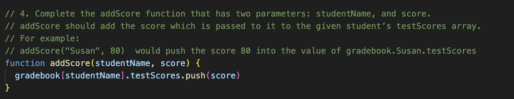

Sprint 4 Technical - Problem Solving
19 April, 2025
In Sprint 4, I continued to refine my JavaScript knowledge by completing challenges (Javascript Kata), during which I had to solve many problems.
Tell your non-tech friend a story about a time you:
Were blocked on a simple problem:
What was the problem?
In the gradebook challenge, I got very confused when the function I wrote to add test scores wasn't working. It was simply returning "undefined", instead of an existing testScores array.
What problem-solving techniques did you use?
I read online, and spend a while looking through my code to find the issue. I was frustrated at first but then I decided to just take a break and come back to the problem. When I came back to the problem, I started with the basics. First, I needed to talk myself through the problem so that I fully understood it (Rubber Ducky Method). In the process of doing so, I read over the error message in full. Before this, I only skimmed it and saw some value "undefined", but when I read the whole error message I noticed it said "testscores is undefined". I'd been looking at the wrong thing, rather than focusing on what was evaluating to "undefined", I simply needed to change "testscores" to "testScores", and it fixed everything.
How did you feel throughout the process?
Frustrated at first, but calm after I took a break. I remained calm as I worked my way through the basic problem solving techniques until I found the problem.
What did you learn?
Often, the biggest part of solving a problem is to simply understand what the problem is. Understanding the problem is an important step that can be achieved in a number of ways (e.g. Rubber Ducky method, Reading error messages, etc.)
It's also usually best to work your way through some of the basic problem solving techniques (pseudocoding, console.log()ing, rubber ducky, error messages, etc.), because often the source of the problem will jump out at you.
Elegantly solved a problem:
What was the problem?
For the Super Flip Flop challenge, I wanted to try and employ problem solving techniques preventatively, to minimize confusion later on in the process.
What problem-solving techniques did you use?
The first thing I did was research. I didn't know about the remainder operator, so I looked online (MDN web docs, W3Schools) to find out how it worked. Researching helped me solve the problem more effeciently and elegantly. (Had I not researched the remainder operator, I probably would have divided a number, the subtracted it from it's own Math.floor(), if 0, no remainder meaning it is a multiple. By researching I found a much more consise way of solving the problem.)
Secondly, I made sure to write good pseudocode. When pseudocoding I realised some errors that I would run into with the order I was doing things, which would have returned multiple values, so I had to change it. This made me very glad that I pseudocoded because If I hadn't, It would have been much more confusing when I ran into those problems.

How did you feel throughout the process?
Much more calm and confident than in previous challenges, because I was using the problem solving techniques preventatively, so I had created a map for myself to solve the problem. I was a lot more focused and clear on what I was doing.
What did you learn?
It's best to also use these problem solving techniques preventatively, as part of the planning process. Not just to solve problems once they do arise. Having a clear plan helps you to remain focused and avoid creating bugs. Planning also allowed me to write what I think is the best possible solution, not just any solution that works.
Reflect on how confident you feel using each of these problem-solving techniques/processes:
Pseudocode - 9/10
Pseudocoding is the problem solving technique I'm strongest at.
Pseudocoding is about breaking a probem into smaller, more managable subproblems that if solved, will add together to solve the larger problem. This is done by commenting steps of what the code should do before you actually begin coding. Pseudocoding means that you can tackle a problem one step at a time, without worrying about everything at once.
When psuedocoding, write in in plain english, using comments, the steps the code needs to follow to achieve it's goal. You don't have to worry about all the details about how it will do that, that's what the actual coding is for. Just worry about what it should do at each step.
Pseudocode is also important for collaboration. By having steps laid out in plain english, other developers can contribute after you've finished working. It's also useful because it's universal - all developers will be able to read and understand it no matter which programming languages they use. It breaks a task down to it's core logic.
When pseudocoding, it's important to be clear and concise, so that it's easily understandable. It's especially important to be clear on important details like an algorithms desired inputs, etc, but avoid overcomplicating it
Trying Something - 6.5/10
In the Sprint 4 Javascript Kata, I sometimes tried things out without researching deeply, and sometimes it worked, sometimes it didn't. It's not usually a first resort, but I've seen it can work sometimes, so with practice, I'll eventually get a sense of if this is the best course of action, depending on the complexity of the situation.
Rubber Ducky Method - 7/10
Involves explaining the problem to a "rubber duck", but really it's just a method of working through the problem, what you're expecting, what's not working and what is, and very often, in the process of explaining it, you'll realise what the problem is.
This method has worked for me before, and I'd rate my confidence using this technique at a 7/10. I could definately improve by practicing it more.
Reading Error Messages - 8/10
Error messages often point out exactly what or where the problem is, or at least what type of problem is being dealt with. They're extremely useful and reading them can give a lot of insight into debugging.
I think I'm getting a lot better at reading error messages, and I'd put my current ability at an 8/10.
Console.log()-ing - 8/10
Allows you to log the current state of data and other information at a specific point in a program. It's very useful for seeing what's happening behind the scenes in a program.
This is one of my first resorts when I run into a problem and it usually helps me figure out what's going on.
Googling - 9/10
Along with pseudocoding this is one of my strongest skills. I don't think I've ever been unable to find answers.
Asking your peers for help - 7/10
I'm pretty confident with my ability to use this technique, but I've given it a 7 because it's not really something I do a lot. I will do it if needed, but it's usually a last resort for me and I usually solve the problem with another technique before I arrive here.
Asking coaches for help - 7/10
Like asking students, I'm usually able to solve a problem on my own before I need to (or before I would naturally) ask for help.
Improving your process with reflection - 6.5/10
Allows you to indentify your own strengths and weaknesses with coding and problem solving, avoid developing bad habits, etc.
Being very new to coding, I'd say I've only had a very small amount of time to think about my coding process and understand where it falls relative to others, and what techniques I'm over or underutilising. I think I will have a lot of improvement here, and more practice with this technique. (Writing this blog post is an example of this).
Reflect on a time you were reluctant to ask for help. Consider what made you reluctant to do so. What might you try differently next time?
In the Sprint 4 JavaScript Kata, I ran into many small errors that each took a while to solve. I was able to solve all of them on my own, but every one of them took long enough to solve that I wondered if I would be able to solve them without asking for help. I was reluctant to ask for help because I like to know that ("I can do it myself.") It's not that I'm embarrassed to ask (I think), it's just that I like to think that the goal of my learning is to have all of this knowledge in my head, so I always try on my own until I can't think of anything else before asking for help.
A specific example would be in the deBee challenge, where I had to remove all the buzzes from a sentence (e.g. the sentence "I'm buzz being BUZz attacked Buzz buZz by bUzz bees! BUZZ" would need to return "I'm being attacked by bees!"). I pseudocoded, then wrote the code that was needed, but the tests still weren't passing. I spend a long time researching the various methods I'd used in the code but I still couldn't find anything wrong with it. At this point I considered asking for help but I tried one last thing. I console.log()-ed the results of my function and found that the return value was "buzz buzz buzz". This helped me to find the issue, a simple mistake using "==" instead of "!=".
In this case, I feel like I learnt more by persevering by myself. The only issue was, I may have gone a little over time on that challenge. In future, I will still aim to solve everything with the knowledge I already have, but be better at recognizing that feedback and responses from others are also a valid form of learning, and If it's required to stay within the alotted time, I should be more quick to ask for help.